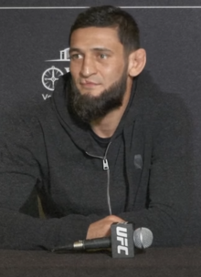

Khamzat Chimaev
Khamzat Khizarovich Chimaev[b] (born 1 May 1994) is a Russian[15] professional mixed martial artist and freestyle wrestler who competes in the Middleweight division of the Ultimate Fighting Championship (UFC).[16] In freestyle wrestling, Chimaev is a three-time Swedish national champion.[17] As of 29 October 2024, he is #3 in the UFC middleweight rankings.[18]
Early life and career
Chimaev was born on May 1, 1994 to a Chechen family.[2][3] He was born in the village of Gvardeyskoye, then part of the Chechen Republic of Ichkeria but now part of Russia's Chechnya.[19] He started wrestling at the age of five in the village of Gvardeyskoye.[20] It has been reported he won a bronze medal at the Russian National Championships in the junior level.[21][22] In 2013, when he was 18, he emigrated to Sweden with his mother, joining his older brother.[23] However, despite living in Sweden for years, Khamzat never acquired a Swedish citizenship, keeping his Russian citizenship. In 2023, Khamzat moved to the UAE.[24][25]
Combat sports career
Wrestling
After moving to Sweden, Chimaev wrestled at multiple clubs, including BK Athén.[26] Considered one of the best freestyle wrestlers in the country,[27] Chimaev won a gold medal at the 2016 and 2017 Swedish Freestyle National Championships at 86 kilograms, and in 2018 he did so at 92 kilograms. Chimaev has had a series of dominant performances in the tournament, posting an overall record of 12–0, which includes three pins, seven technical falls and holds a combined score of 105 points, while only surrendering two himself, across all of his three showdowns.[28][29][26] Chimaev has competed in a few judo tournaments and in four combat sambo fights.[21] Chimaev competed against fellow UFC contender Jack Hermansson in a freestyle wrestling match on 19 November 2021, at Sweden-based Bulldog Fight Night 9, winning on points.[30]
Mixed martial arts career
Chimaev first started training in MMA when he was 23 years old. He trained at Allstars Training Center in Stockholm, along with three-time UFC Light Heavyweight Championship challenger Alexander Gustafsson, Ilir Latifi and Reza Madadi among others.[9] Gustafsson (one of his main training partners) told a Swedish reporter that Chimaev was one of the best fighters he had ever trained with, during a press conference in June 2019.[31]
Early career
In an interview with ESPN, Chimaev claimed he was inspired to start training in MMA during a night at work where he took a 15-minute break to watch the Aldo vs. McGregor main event. Chimaev stated, "I was watching his [McGregor's] fight. I was watching him fight Aldo. I was sitting in night and was working. I was taking rest for 15 minutes and watched his fight. I always look at that like if the guys make so many money like millions and this stuff, why I can't do it now. I'm a fighter, I'm a warrior and I have something special inside me. I had to find some way and take out this to show to the people."[32] Between September 2017 and April 2018, Chimaev had three amateur MMA fights. The first of them was against future IMMAF World Champion Khaled Laallam, whom he defeated via submission in the second round.[33] He won his following two amateur fights, one by submission and one by technical knockout, completing his amateur career with a record of 3–0.[34] Chimaev turned professional on 26 May 2018, at International Ring Fight Arena 14, against Gard Olve Sagen.[35] He won the fight via technical knockout in the second round.[36] Chimaev's next fight took place on 18 August 2018, against Ole Magnor at Fight Club Rush 3.[37] He won via submission with a rear naked choke late in the first round.[38]
